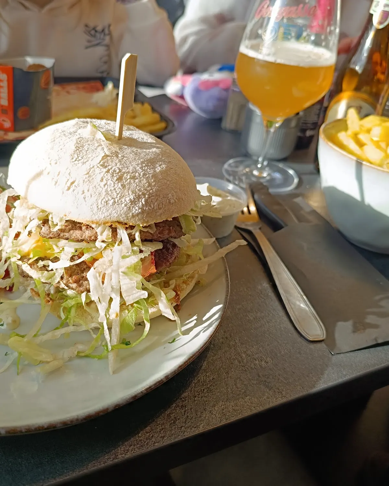
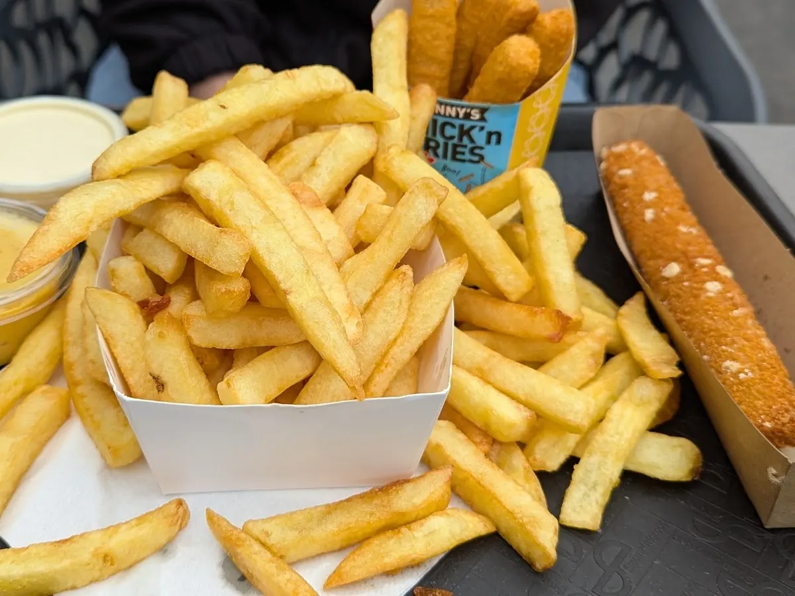
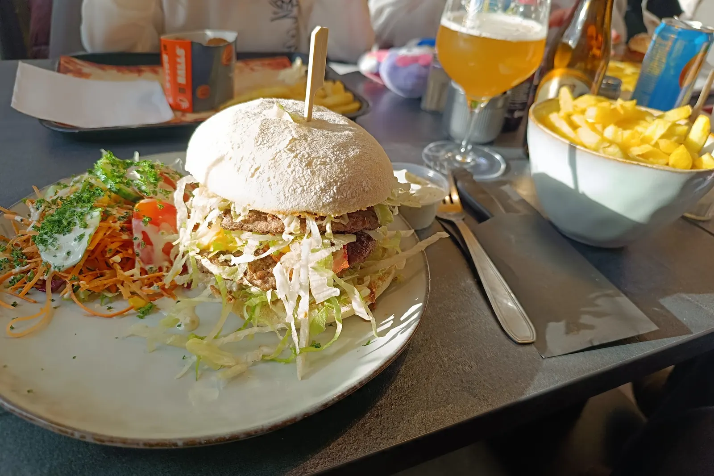
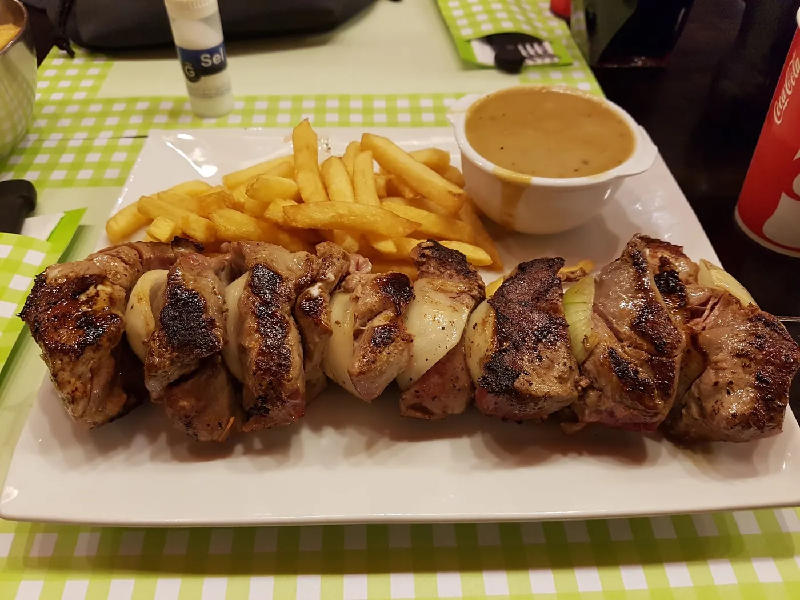
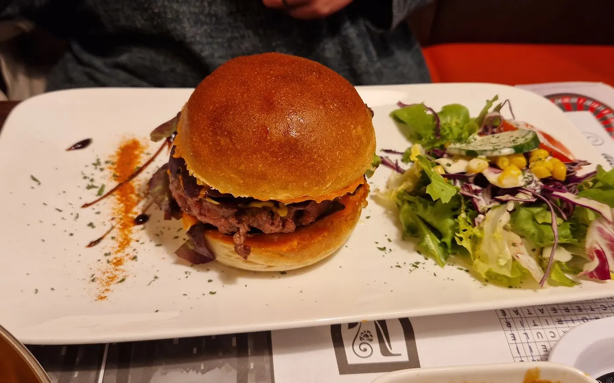
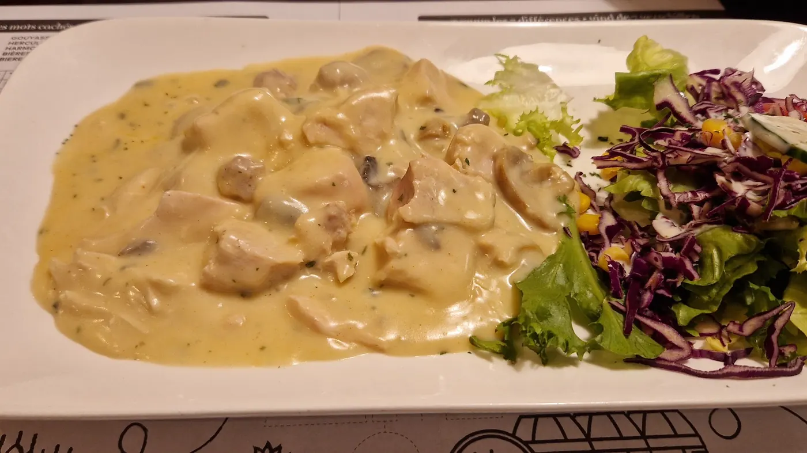
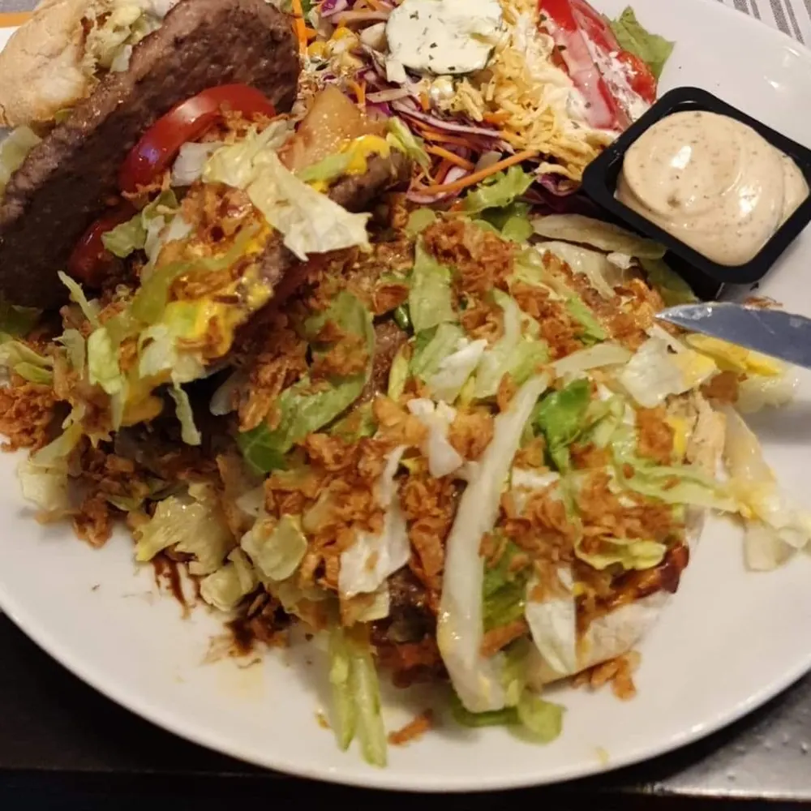
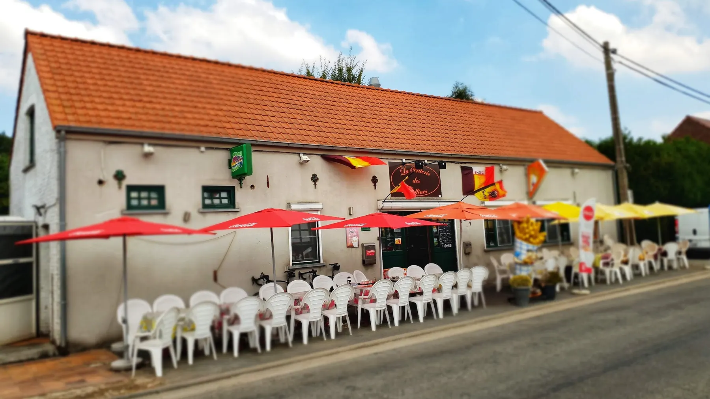

Friterie · Brasserie · Pays des Collines
Friteriedes Collines
Le grand cornet, la mitraillette, le burger pur bœuf maison, et de vraies assiettes servies à table comme au resto. Midi et soir, du mercredi au dimanche, sur la place de Lahamaide.
Mercredi → dimanche · midi et soir


« Un appel, et la commande est prête à être emportée 15 minutes plus tard. »
Saskia L., avis Google
Comptoir & brasserie
Une friterie et une brasserie, réunies au même endroit
Au comptoir, le cornet, la barquette et les snacks pour la route. En salle, des assiettes dressées avec frites et crudités, servies à table.


« Les hamburgers pur bœuf maison sont très bon. »
Stephane V., avis Google 5 étoiles


Extrait de la carte
Du grand cornet au hochepot
Frites, croquettes, neuf mitraillettes, une vingtaine de sauces et des assiettes de brasserie servies avec frites et crudités fraîches.
Nos frites
- Petite3,00 €
- Moyenne4,00 €
- Grande5,00 €
- Grand cornet5,00 €
- Box enfants7,50 €
Nos croquettes
- Croquette de vol-au-vent3,00 €
- Croquette de fromage3,00 €
- Croquette de crevettes grises3,50 €
- Croquette de viande3,00 €
Nos mitraillettes
- Fricadelle7,00 €
- Chasseur chaud8,00 €
- Américain préparé7,00 €
- Fromage (gouda)5,50 €
- Hamburger7,00 €
- Viandelle8,00 €
- Mexicanos8,00 €
- Petite brochette8,00 €
- Grande brochette10,00 €
Nos sauces
Sauce 1,00 € · tartare maison, 3 sauces 1,30 € · carbonnade 2,50 €
Assiettes garnies
À déguster sur place · avec frites et crudités fraîches
- Carbonnades13,00 €
- Vol-au-vent13,00 €
- Boulettes sauce tomate13,00 €
- Un demi-poulet13,00 €
- Assiette hamburger maison2 viandes · jusqu'à 5 viandes, 21,00 €14,00 €
- Américain, frites, salade, crudités15,00 €
- Langue de bœuf sauce madère16,00 €
- Chicons au gratinen saison16,00 €
- Hochepot, saucisse et larden saison14,00 €
- Ribbetjes20,00 €
- Pavés de bœuf 300 gsauce au choix21,00 €
Prix tels qu'imprimés sur la carte de la friterie, photographiée sur sa fiche Google. La carte complète (viandes, brochettes, pâtes fraîches, poissons) est en salle et fait foi.
À emporter
Commandez avant, c'est prêt à l'heure dite
Choisissez ce qui vous fait envie, le jour et l'heure de retrait, midi ou soir. Vous passez sur la place, c'est emballé.
« Une facilité bien appréciable à quelques kilomètres de la maison, surtout quand on habite en pleine campagne. »
Saskia L., adepte du à emporter, sur Google
Plutôt une table, ce soir ?
« […] si vous voulez manger sur place toujours téléphone avant car leur succès font que il son toujours remplis » — Stephane V., sur Google

Une longue terrasse, et le service à table
- En terrasse aux beaux joursUne rangée de tables le long de la façade, sous les parasols.
- Servi à table« […] un vrai service à table comme au resto 🍴 », écrit Mdn93 sur Google.
- Un coin pour les enfants« Il y a un coin pour les enfants […] avec plusieurs jeux. » — Stephane V., sur Google
- Accessible en fauteuilAccès en fauteuil roulant indiqué, et paiement par carte ou en espèces.
Ils l'ont écrit sur Google
« Très bonne adresse ! »
Ce que les clients écrivent sur la fiche Google de la friterie, du cornet à emporter au service en salle.
Horaires et accès
Cinq jours sur sept, midi et soir
Du mercredi au dimanche
| lundi | fermé |
|---|---|
| mardi | fermé |
| mercredi | 11 h 30 – 14 h 3017 h 30 – 22 h |
| jeudi | 11 h 30 – 14 h 3017 h 30 – 22 h |
| vendredi | 11 h 30 – 14 h 3017 h 30 – 23 h |
| samedi | 11 h 30 – 14 h 3017 h 30 – 23 h |
| dimanche | 11 h 30 – 14 h 3017 h 30 – 22 h |